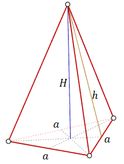
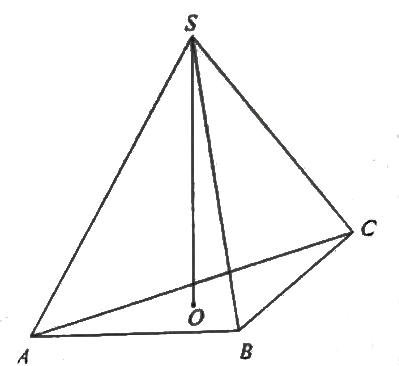

Ostrosłup prawidłowy trójkątny
Ostrosłup prawidłowy trójkątny - to taki ostrosłup, który ma w podstawie trójkąt
równoboczny. Wierzchołek takiego ostrosłupa leży dokładnie nad środkiem podstawy. W związku z tym
ostrosłup prawidłowy trójkątny ma trzy identyczne ściany boczne, które są trójkątami
równoramiennymi.
Spodek wysokości ostrosłupa (\(H\)) leży na przecięciu dwusiecznych (które są
jednocześnie wysokościami i środkowymi) trójkąta równobocznego w podstawie.

Wzór na pole powierzchni ostrosłupa prawidłowego trójkątnego:
\[P_c=P_p+P_b=\frac{a^2\sqrt{3}}{4}+3\cdot \frac{1}{2}ah=\frac{a^2\sqrt{3}}{4}+\frac{3ah}{2}\]
gdzie:
\(P_p\) - pole podstawy ostrosłupa
\(P_b\) - suma pól ścian bocznych ostrosłupa
Wzór na objętość ostrosłupa prawidłowego trójkątnego: \[V=\frac{1}{3}\cdot P_p\cdot
H=\frac{1}{3}\cdot \frac{a^2\sqrt{3}}{4}\cdot H=\frac{a^2H\sqrt{3}}{12}\] gdzie:\(P_p\) - pole podstawy ostrosłupa
\(P_b\) - suma pól ścian bocznych ostrosłupa
\(P_p\) - pole podstawy ostrosłupa
\(H\) - wysokość ostrosłupa
Każda krawędź ostrosłupa prawidłowego trójkątnego ma długość \(9\) (ostrosłup taki
jest nazywany czworościanem foremnym). Wysokość tego ostrosłupa jest równa
A.\( 3\sqrt{6} \)
B.\( 3\sqrt{3} \)
C.\( 2\sqrt{6} \)
D.\( 3\sqrt{2} \)
A
Objętość ostrosłupa prawidłowego trójkątnego \(ABCS\) (tak
jak na rysunku) jest równa \(72\), a promień okręgu wpisanego w podstawę \(ABC\) tego ostrosłupa jest równy \(2\). Oblicz tangens kąta między
wysokością tego ostrosłupa i jego ścianą boczną.
\(\operatorname{tg} \alpha =\frac{\sqrt{3}}{9}\)
W ostrosłupie prawidłowym trójkątnym wysokość ściany bocznej prostopadła do
krawędzi podstawy ostrosłupa jest równa \(\frac{5\sqrt{3}}{4}\), a pole powierzchni bocznej tego
ostrosłupa jest równe \(\frac{15\sqrt{3}}{4}\). Oblicz objętość tego ostrosłupa.
\(V=\frac{\sqrt{209}}{12}\)
Dany jest ostrosłup prawidłowy trójkątny. Pole powierzchni bocznej tego ostrosłupa
jest równe \(24\), a kąt płaski ściany bocznej przy podstawie ma miarę \(\alpha \) i
\(\operatorname{tg} \alpha =2\). Wyznacz cosinus kąta nachylenia ściany bocznej ostrosłupa do
płaszczyzny jego podstawy.
\(\frac{\sqrt{3}}{6}\)
Krawędź boczna ostrosłupa prawidłowego trójkątnego jest nachylona do płaszczyzny
podstawy pod kątem \(60^\circ\). Odległość spodka wysokości ostrosłupa od krawędzi jest równa \(4\).
Oblicz objętość tego ostrosłupa.
\(V=\frac{128\sqrt{3}}{3}\)
W ostrosłupie prawidłowym trójkątnym krawędź podstawy jest \(2\) razy dłuższa od
wysokości ostrosłupa poprowadzonej na tę podstawę. Wyznacz kąt nachylenia ściany bocznej do
podstawy.
\(60^\circ \)
Podstawą ostrosłupa prawidłowego trójkątnego \(ABCS\) jest trójkąt równoboczny
\(ABC\). Wysokość \(SO\) tego ostrosłupa jest równa wysokości jego podstawy. Objętość tego
ostrosłupa jest równa \(27\). Oblicz pole powierzchni bocznej ostrosłupa \(ABCS\) oraz cosinus kąta,
jaki tworzą wysokość ściany bocznej i płaszczyzna podstawy ostrosłupa.
\(9\sqrt{30}\)
Trójkąt równoboczny \(ABC\) jest podstawą ostrosłupa prawidłowego \(ABCS\), w
którym ściana boczna jest nachylona do płaszczyzny podstawy pod kątem \(60^\circ \), a krawędź
boczna ma długość \(7\) (zobacz rysunek). Oblicz objętość tego ostrosłupa. 
\(V=21\sqrt{7}\)
W ostrosłupie prawidłowym trójkątnym \(ABCS\) krawędź podstawy ma długość \(a\).
Pole powierzchni bocznej tego ostrosłupa jest dwa razy większe od pola jego podstawy. Oblicz cosinus
kąta nachylenia krawędzi bocznej tego ostrosłupa do płaszczyzny jego podstawy. 
\(\cos \alpha = \frac{2\sqrt{7}}{7}\)
W ostrosłupie prawidłowym trójkątnym krawędź boczna jest trzy razy dłuższa od
wysokości ostrosłupa. Krawędź podstawy ma długość \(12\). Oblicz objętość i pole powierzchni bocznej
tego ostrosłupa.
\(V=36\sqrt{2}\)
\(P_b=54\sqrt{2}\)
\(P_b=54\sqrt{2}\)
Dany jest ostrosłup prawidłowy trójkątny, w którym długość krawędzi podstawy jest
równa \(a\), a krawędź boczna jest nachylona do płaszczyzny podstawy pod kątem \(\alpha \).
Ostrosłup ten przecięto płaszczyzną, która przechodzi przez krawędź podstawy i jest nachylona do
płaszczyzny podstawy ostrosłupa pod kątem \(\frac{\alpha}{2}\). Oblicz pole otrzymanego przekroju.
\(P=\frac{a^2\sqrt{3}\sin \alpha}{4\sin \frac{3}{2}\alpha }\)